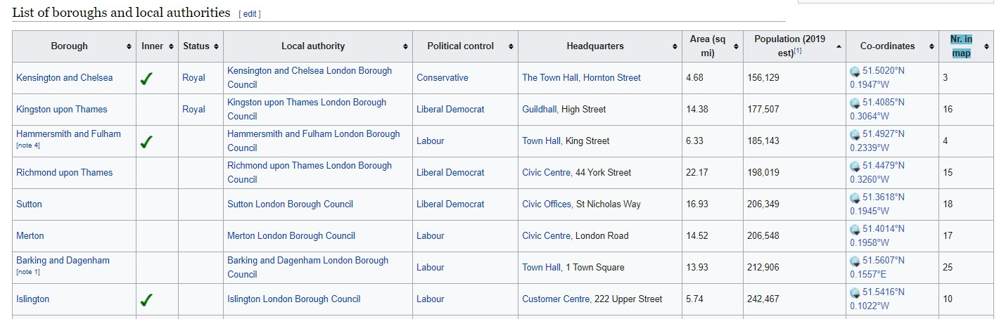
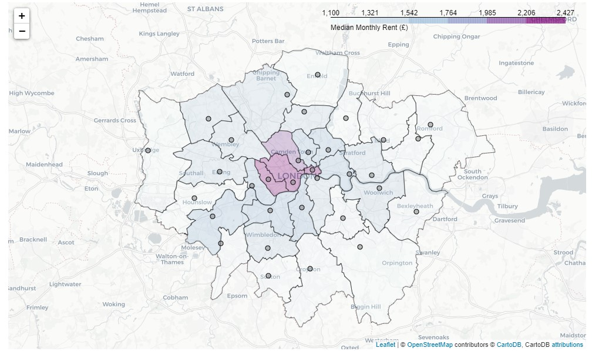
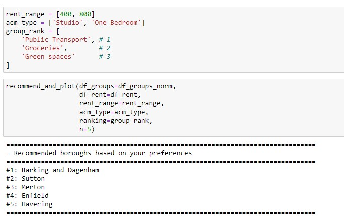
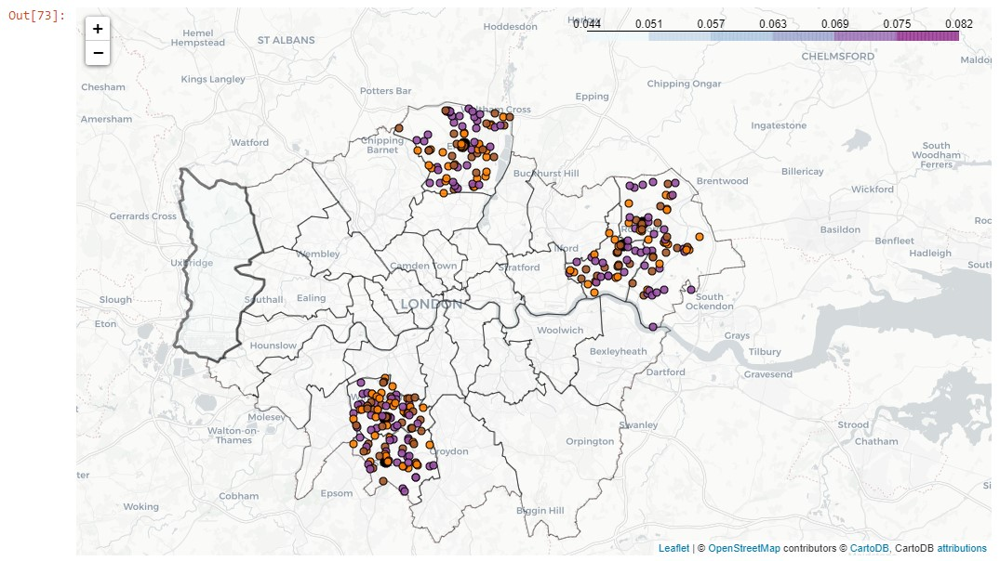

About
This repository contains capstone project for IBM Data Science Certification. Below is the report which summarizes the project. More details of the implementation can be found in Jupyter Notebook.
Implementation in the form of a web app can be found here.
IBM Data Science Professional Certificate
Capstone Project: Recommendation of London Boroughs
Introduction
A very common problem for a lot of people is choosing where to live in a big city. While rent is an important factor when deciding which area to live in, there are a lot of other subjective criteria based on personal preferences - e.g., what kind of venues would one like to have close to home (shopping, bars, parks, etc.), are there parks nearby, etc. There are various solutions to this problem - online search, asking friends, visiting the areas yourself - all of these are rather time consuming and subjective. However, this problem can be tackled using a data-driven approach by creating a recommendation engine that would suggest areas that match the user-defined criteria.
London, UK is one of the largest cities in the world and contains 33 areas (also known as boroughs). This presents a good use case for implementing such an algorithm and testing whether it makes sensible recommendations.
Data
To build a recommender, we need to have some information about the rents in London, borough geography, and what characteristics of each borough. While rent and geographical data are quite objective, there are many ways to characterise boroughs. For this project, however, we are going to use information about the venues retrieved from Foursquare API.
Data Sources
The following data sources are going to be used to recommend Greater London boroughs to the user:
- Rent data - available from London Datastore in *.xls format: Average Private Rents, Borough
- List of London Boroughs and their geographical coordinates, available from Wikipedia (html table): List of London Boroughs
- Greater London borough boundaries in GeoJSON format, available here
- Information on venues in Greater London area. Available via free version of Foursquare API.
Data Cleaning
Rent Data
Rent data is retrieved from official London Datastore website which tracks average private rents per borough. The data is released quarterly. The rent information is provided for each borough and contains:
- Category - type of accommodation, e.g., Room, Studio, One Bedroom, Two Bedroom, etc.
- Average
- Lower quartile
- Median
- Upper quartile

Only latest available data is used, which at the time was first quarter of 2019. Also, we are going to use lower quartile, median, and upper quartile data instead of average to consider the skewed nature of averages. In addition, aggregate areas (e.g., 'North West') are excluded. Median rents for 2019 Q1 for the first few boroughs are shown below.

Borough Data
In addition to rent data, we need to have some geographical data of the boroughs. Namely, we need to know the locations (i.e. center of the borough) as well as their boundaries. This will be required to determine which borough the venue belongs to.

Information about boroughs and their geographical centers can be found on Wikipedia. The data from the provided table is retrieved using BeautifulSoup in Python and converted to a pandas DataFrame:

In addition, a theoretical radius of the borough is calculated using area:
where is radius, is area, and is ~3.1459... This calculation of the radius approximates each borough as a circle and will be used in the next step when retrieving venue data.
The borough data combined with rent data can then be conveniently shown on a map:

Venue data
To characterize boroughs, we are going to use venue data available for free via Foursquare Places API. To retrieve the venues, we need to provide the API with the location (longitude and latitude) and the radius within which we want to get all the venues. Unfortunately, the free API version limits the results to 50 per request. Given that there are likely much more venues within each borough, a different method is required.
While this approach is not the most efficient, without a priori knowledge about the density of the venues the easiest solution was chosen - a grid scan of the entire London area. This was done by approximating the entire Greater London as a circle and dividing it into nine concentric rings. Each ring was divided into sub-rings depending on its location - more sub-rings in the inner rings, and less sub-rings in the outer rings. This was chosen assuming that the density of the venues is much larger in the central parts of London. The result of this procedure is a set of concentric rings that covers the entire Greater London area:

We then create a point on each circle three degrees apart, which results in a grid of ~3500 locations that we then use to scan the entire area by iterating through each coordinate and sending it to Foursquare Places API's venues search endpoint.
At the end of the scan, we retrieve around 180,000 venues. However, as our search was not very efficient, a lot of them are duplicated. Dropping duplicate venues, we are left with 19,737 unique venues with the following information:

Methodology
This section describes the methodology of the recommendation algorithm. The algorithm for this system is rather simple, but this is mainly because we do not have a large sample of user data to do, for example, collaborative filtering. Therefore, we are relying on explicit input from a single user.
Data preparation
Each venue retrieved from the Foursquare API is mapped to a borough based on its coordinates and borough's boundaries. This is implemented using a computation geometry Python package shapely.
We then group each type of venue to nine large arbitrary groups:
- Going out - bars, pubs, night clubs.
- Green spaces - parks, gardens, trails, beaches, etc.
- Eating out - restaurants, cafes, coffee shops, brasseries, etc.
- Entertainment - theatres, museums, art galleries, zoos, bowling, etc.
- Shopping - stores, malls, arcades, boutiques, shops.
- Health and Sports - gyms, yoga studios, basketball courts, football courts, etc.
- Groceries - supermarkets, bodegas, liquor stores, etc.
- Public Transport - bus stops, tram stops, metro stops, train stations, etc.
- Other - a catch-all category for everything else
We then create a representation of each borough by calculating normalized density vector a of venue groups, where each element is defined as:
where is the number of venues of the th group in the borough, and N is total number of venues in the borough.
Recommendation algorithm
The purpose of the algorithm is to recommend a list of boroughs to a user based on their specified preferences.
Let be a venue matrix of dimensions , where every element represents a normalized density of venue group in a borough :
The user-provided preferences can be formally written as a column vector :
Recommendation matrix then can be calculated as a matrix product:
This matrix is a column vector of length where each row represents the weight of each borough. The larger the weight, the closer the borough matches users preference.
Given a number of boroughs we want to recommend, largest weights are selected and the list of boroughs are returned in an order from the highest weigh to the lowest.
Implementation in Python:
def create_preferences(ranking=None): "Converts `ranking` list to normalized pandas DataFrame" pref_dict = { 'Eating out': 0, 'Entertainment': 0, 'Green spaces': 0, 'Groceries': 0, 'Health and Sports': 0, 'Nightlife': 0, 'Other': 0, 'Public Transport': 0, 'Shopping': 0, } N = len(ranking) for i, cat in enumerate(ranking): pref_dict[cat] = N - i df = pd.DataFrame.from_dict(pref_dict, orient='index', columns=['Preference']) df['Preference'] = df['Preference'] / df['Preference'].sum() return df
def recommend_boroughs(W=None, p=None, n_brghs=5): """ Calculates matrix product of DataFrames W and p Inputs: W - pandas DataFrame containing venue group density for each borough p - pandas DataFrame with user group preferences n_brghs - int, number of boroughs to recommend Returns: rec_boroughs - `n_brghs` number of boroughs sorted by highest match value df_rec - resulting recommendation matrix as pandas DataFrame """ W_ = W.copy() W_.set_index(['Borough'], inplace=True) df_rec = (p['Preference'] * W_).sum(axis=1).to_frame() df_rec.columns = ['Match'] df_rec.sort_values(by='Match', ascending=False, inplace=True) rec_boroughs = df_rec.head(n_brghs).index.tolist() return rec_boroughs, df_rec
Filtering venue matrix based
Implementation in Python:
def filter_rent_data(df=None, categories=None, rent_range=None): """ Returns boroughs that satisfy the conditions for `categories` and `rent_range` Inputs: df - pandas DataFrame containing rent data categories - an iterable or a string specifying appropriate accommodation types rent_range - a list or a tuple with r_min and r_max rent ranges. Output: boroughs - a list of boroughs that match the condition """ if isinstance(categories, str): cats = [categories] else: cats = categories cat_cond = df['Category'].isin(cats) rent_lower = rent_range[0] rent_higher = rent_range[1] # If invalid data provided if rent_lower > rent_higher: rent_higher = rent_lower rent_cond_1 = (df['Lower quartile'] <= rent_higher) & (df['Upper quartile'] >= rent_higher) rent_cond_2 = (df['Lower quartile'] <= rent_lower) & (df['Upper quartile'] >= rent_lower) rent_cond = rent_cond_1 | rent_cond_2 rent_cond = (df['Lower quartile'] <= rent_higher) & (df['Upper quartile'] >= rent_lower) not_null = ~df['Median'].isnull() df_filtered = df.loc[(cat_cond & rent_cond & not_null)] boroughs = df_filtered['Borough'].unique().tolist() return boroughs
Both of the above functions are then combined into one large function:
def recommend_and_plot(df_groups, df_rent, rent_range=None, acm_type=None, ranking=None, n=5): """ Recommends top n venues and plots the results on the map """ available_boroughs = filter_rent_data(df=df_rent, categories=acm_type, rent_range=rent_range) p = create_preferences(ranking=ranking) df_grp_filtered = df_groups.loc[df_groups['Borough'].isin(available_boroughs)] rec_boroughs, df_rec = recommend_boroughs(W=df_grp_filtered, p=p, n_brghs=n) # Printing and plotting of results # ...
Results and discussion
We started with information about monthly rents for 33 London boroughs and combined it with data about venues within those boroughs retrieved from Foursquare API. Using grid-scanning we identified approx. 20,000 unique venues and grouped them into nine larger groups.
Plotting the boroughs and venues on the map showed that the distribution of the venues was not uniform and most of them were concentrated in the central parts of London. We assigned each venue to a borough based on its latitude and longitude, and boroughs geographical limits. By creating a normalized density vector of these venues for each borough, we effectively created a mathematical representation of the neighbourhood that could then be used in a recommendation algorithm.

Using accommodation and rent preferences, and combining this data with venue density matrices of the boroughs we created a recommendation function that displays an arbitrary, user-defined, number of recommended boroughs with preferred venues overlaid on a map.

This model is a good illustration of the general concept and could be extended to incorporate additional information. It could also be implemented as a user-friendly web application.
Conclusion
The purpose of this project was to create an algorithm that recommends a London neighbourhood to a user based on their preferences. After cleaning data and performing exploratory data analysis, the process was synthesized to one function recommend_and_plot function which could be re-used in a dedicated application. This could be used to help people in the initial step of choosing where to live in London.
Admittedly, this is a simplistic model as there are way more important data points that could be used (e.g., crime rate, congestion, air quality, etc.). Nonetheless, the algorithm works and is a good demonstration of general principles that can be used for combining different types of information together to come up with a recommendation. While not perfect, this algorithm could serve as one of the steps in a person's decision-making process when looking for a new place to rent in London.